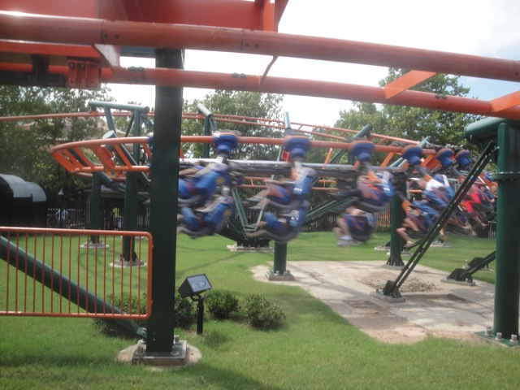
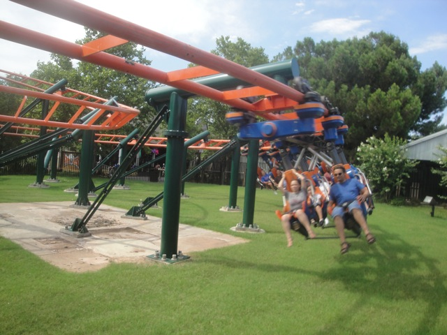

| |
Steel Lasso Review

We're here at Frontier City to ride Steel Lasso. A Typical Kiddy SLC. After climbing in the seat, we see a pleasant surprise. Lap Bars!! You have no idea how much better this makes the ride. Anyways, we pull down the lap bar and away we go. We climb up the lifthill, though you don't get a good view or even feel big thanks to the catwalk right below you. Then you reach the top. You start to go down a curved sort of drop thats more of just a downward quarter helix. Then you sort of go into a partial upward helix before heading around this S Curve and going through this downward helix. Wee. We then rise up a small little hill and head into a full downward helix to the ground before going around another turn and gliding straight into the station. So yeah. It's pretty much just like a regular roller skater, only inverted. It's a tremendous improvement from the earlier Kiddy SLCs thanks to the lap bars as well as a slightly better layout. Yeah, it's a kiddy coaster, but it's one of the better ones.
4/10
Location: Frontier City
Opened: 2008
Built by: Vekoma
Last Ridden: July 21, 2013
I have ridden this exact same ride at the following parks.
Movie Park Germany
Steel Lasso Photos


|